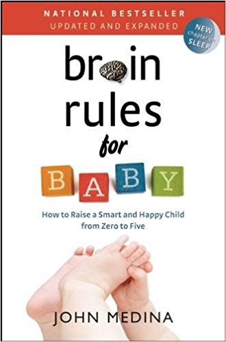

Brain Rules for Baby
Sunday December 9, 2018
To be a good parent, be a good person. The core recommendations on "How to raise a smart and happy child from zero to five" are empathy and understanding emotion.
"Human learning ... is primarily a relational exercise." (page 111)
Medina aims for objective reasonableness, and it's usually easy for me to agree.
For the abbreviated book (and a few extra nuggets) check out the 15 pages of "practical tips" starting on page 287. Here's my summary of recommendations:
When someone is in an emotional state, use "the empathy reflex" (page 83):
- Describe the emotional changes you think you see.
- Make a guess as to where those emotional changes come from.
This is like a flip of "I statements."
After empathy, the second major focus is on understanding emotion: talking about emotions, accepting them as natural, and (eventually) not being ruled by them.
There are lots of concrete recommendations:
- (During pregnancy) Gain appropriate weight, eat a balanced diet, exercise moderately, reduce stress.
- Breast-feed for a year.
- Talk to your baby a lot.
- Praise effort, not IQ (encourage a growth mindset).
- Use "authoritative parenting" which is "demanding and warm" and involves:
- Clear, consistent rules and rewards
- Swift punishment
- Rules that are explained
- (Your child should) Watch no TV before age two.
- (Your child should) Exercise frequently.
- (Your child should) Play a lot in open-ended ways, such as the "mature dramatic play" of Tools of the Mind, which may involve making a "play plan."
- (Your child should) Learn sign language.
- (Your child should) Study a musical instrument for ten years.
Medina gives a very reasonable presentation of intelligence and IQ, including this historical tidbit on how we got the term "Intelligence Quotient" in the first place:
"The score was the ratio of a child's mental age to his or her chronological age, multiplied by 100. So a 10-year-old who could solve problems normally solved only by 15-year-olds had an IQ of 150: (15/10) X 100." (page 95)
On page 100 we get five ingredients of human intelligence stew, which I like:
- The desire to explore
- Self-control
- Creativity
- Verbal communication
- Interpreting nonverbal communication
The associating, questioning, observing, experimenting, and networking from an old Harvard Business Review article on "Innovators DNA" get woven in, and it's not awful.
Three last details I enjoyed:
- Episodic memory is a distinct kind of memory, and may be particularly useful for creative thinking. (page 106) Maybe consciously draw on it when brainstorming?
- There's a test of creativity called the Torrance Tests of Creative Thinking. (page 107) It's mostly things like "how many uses can you come up with for X?"
- There's a Harvard-developed test of morality, now at moralsensetest.com. (page 222) It's mostly variations on the trolley problem.
